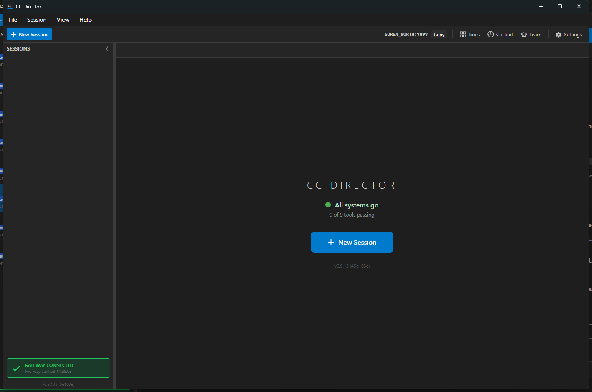

Branch: issue-642-director-no-credential
Touches: CcDirector.Core (account/telemetry), CcDirector.Avalonia (startup), CcDirector.Core.Tests
Build: dotnet build cc-director.sln -> Build succeeded, 0 Warning(s), 0 Error(s).
DevThrottleLoginTelemetryReporter.ReportLoginAsync no longer attaches a
Bearer token. The Director holds no credential; the Gateway attaches its own account
token when it forwards (issue #639). The director-startup reporter already sent no Authorization
header and stays that way (now covered by a test).FirstRunLoginCoordinator gained an injectable persistCredential seam
(default = account.StoreTokens, which preserves the Gateway sign-in path that
legitimately stores). The Director's post-logout AccountGateScreen now wires the
coordinator with FirstRunLoginCoordinator.WithoutPersisting, so a sign-in on the
Director captures and reports the login but writes NO local credential blob.DevThrottleCredentialMigration.DeleteStaleDirectorCredential deletes any
pre-existing %LOCALAPPDATA%\cc-director\config\director\devthrottle-credential.bin
with a log line. It is called from App.InitializeServices on every launch (before the
account service is built). It targets ONLY the Director's per-install blob, never the Gateway's.| # | Criterion | Expected | Actual (proof) | Result |
|---|---|---|---|---|
| 1 | A fresh Director run never creates devthrottle-credential.bin. |
File absent after a normal run. | Launched the real Director (slot 14, PID 85788). The blob was absent before and stayed absent;
the migration logged "no Director credential blob present (nothing to migrate)".
See ac1-fresh-run-no-blob.txt. Also proven at the unit/harness level
(AC1 in harness.log). |
PASS |
| 2 | An existing blob present before upgrade is deleted on first run, with a log line. | Present before, absent after, deletion logged. | Seeded an 8-byte blob at the real Director path, then launched the real Director (PID 78556).
The blob was deleted; log line:
[DevThrottleCredentialMigration] ... deleted stale Director credential blob ... (issue #642).
See ac2-migration-deletes-blob.txt. Also proven by the harness (AC2) and three
unit tests. |
PASS |
| 3 | Login and startup telemetry POSTs carry no Authorization header (verified via a Gateway capture). | No Authorization header on either POST. | The proof harness drives the REAL reporters against a stub Gateway that records the inbound
Authorization header. Login POST /telemetry/login: Authorization present = False.
Startup POST /telemetry/director-startup: Authorization present = False.
See results.json / harness.log. Also covered by unit tests. |
PASS |
| 4 | The Director still functions end to end with no local credential (reaches the main window). | Main window shown; boots unconditionally (#664). | Both launches showed the main window ("Main window shown ..." log line) and a healthy Control
API (/healthz status=ok). Screenshot: ac4-director-main-window.png
(CC Director main window, "All systems go", no sign-in prompt). |
PASS |
| 5 | Tests updated: no token stored on the Director; reporters send no Bearer; migration deletes a blob. | Passing tests. | 95 Account tests pass (unit-tests-output.txt), including: login reporter sends no
Authorization; startup reporter sends no Authorization; the Director non-persisting coordinator
path stores nothing; and three migration tests (delete present blob, no-op on absent, safe to
re-run). The Gateway suite (934 passed) confirms the shared coordinator's storing path is
unchanged. |
PASS |

AC3a: gateway received POST /telemetry/login; source=app; Authorization header present=False -> PASS AC3b: gateway received POST /telemetry/director-startup; Authorization header present=False -> PASS AC2: blob presentBefore=True, migration deleted=True, absentAfter=True -> PASS AC1: migration with no blob -> reported deleted=False, file created=False -> PASS OVERALL: ALL ACCEPTANCE CRITERIA PASS
No architecture container changes. The security posture only strengthens: the Director ceases to
store a DevThrottle credential and stops sending a bearer token, confining the account token to the
Gateway. No blocking security rule (DT-01..DT-07) is violated and none needed a change; DT-05
(information disclosure) is reinforced because the token is no longer held or transmitted by the
Director, and the access token is still never logged. No docs/cencon/ drift.
ac1-fresh-run-no-blob.txt - real Director: fresh run, blob absent, migration "nothing to delete".ac2-migration-deletes-blob.txt - real Director: seeded blob deleted on first run, with the log line.ac3 (results.json + harness.log) - stub-Gateway capture: no Authorization header on either telemetry POST.ac4-director-main-window.png - the Director reaching the main window with no credential.unit-tests-output.txt - 95 Account tests passing._proof-harness/ - the throwaway proof harness (not in cc-director.sln, not shipped).I believe this is finished. All five acceptance criteria are met and proven against a real running Director and a stub Gateway, the full solution builds clean (0 warnings, 0 errors), and the shared Gateway sign-in path is preserved.